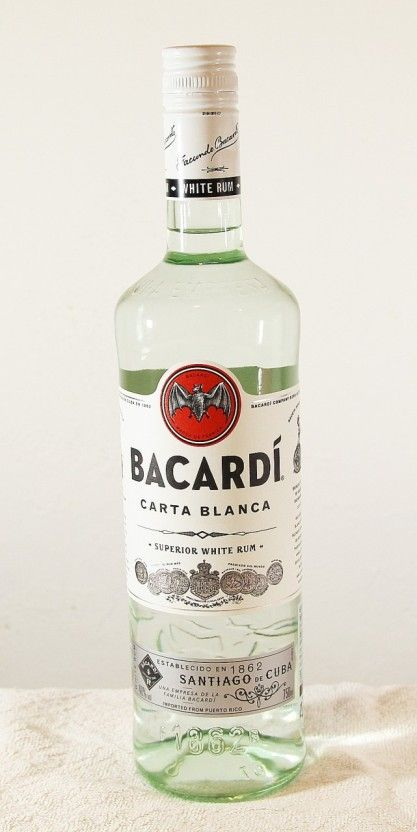

깁니다. 시간 날 때 대충 슬쩍 보십쇼 ㅎㅎ;
성인이 되면 풀리는 금제가 몇 가지 있습니다.
술과 담배를 대표적인 예로 들 수 있겠죠.
담배는 배워서 하등 쓸모 있는 게 없지만 술은? 다릅니다.
주량에 맞춰 적당히 음용한다면 좋은 스트레스 해소 방법이 될 수 있습니다.
물론 건강에 그렇게 좋지는 않습니다.
사회생활에서 거진 필수라고 볼 수 있죠.
뭐 재밌고 즐거운 것들 중에 건강에 마냥 좋은 것들만 있는 게 아니잖습니까 하하
간단하게 적어보겠습니다.
0. 주량
술은 그냥 무턱대고 마시면 그저 독입니다.
본인의 주량을 알고 거기에 맞춰 조절하는 게 좋습니다.
그런데 처음 마셔본다면 주량을 알 수 있는 길이 어디있습니까? 그쵸?
천천히 마시면서 얼마나 마셨을 때 취기가 도는지 알고 있어야 합니다.
도수 높은 술로 급하게 마시면 누구나 다 취합니다.
그러니까 도수가 약한 술로 천천히 시작해보자구요.
1. 6대 증류주
조주기능사 공부를 시작하면 제일 먼저 6대 증류주에 대해 배웁니다.
럼, 진, 데킬라, 보드카, 위스키, 브랜디
이 여섯가지를 통틀어 6대 증류주라고 합니다.
하지만 이 여섯가지 술들은 아직 간이 퓨어한 사람들에겐 힘듭니다.
그러므로 증류주가 아닌 발효주부터 서술하겠습니다.
2. 맥주
맥주가 비싼 취미이긴 하지만 천천히 이것저것 맛보기엔 좋습니다.
현존하는 술 중에서 도수가 가장 낮은 편에 속하기도 합니다.
보통 우리나라에서 쉽게 접할 수 있는 맥주들이라 한다면
카스, 테라, 필라이트 정도가 있겠죠?
어디서든 한번쯤은 들어보셨을겁니다.
그만큼 구하기도 쉽고 제조가 쉽기 때문에 많이 만들어집니다.
황금빛의 색, 찐한 보리향, 강한 탄산의 '라거'입니다.
편의점에 가면 4캔 만원하는 수입 맥주들을 보셨을겁니다.
수입맥주 시장이 점차 확대됨에 따라 흔히 볼 수 있었던 일반적인 '라거'가 아닌
꽃 향기를 가진 '에일' 맥주들이 점점 등장했습니다.
라거와 에일의 차이는 발효 방식에서 나온다고 보시면 됩니다.
물론 직접 만드는 게 아닌 이상 발효 방식보단 맛의 차이를 봐야겠죠?
보리와 강한 탄산이 주가 되는 라거
과일향, 꽃향과 단맛이 주가 되는 에일
대충 이정도로 보시면 되겠습니다.
물론 에일 맥주라고 다 달달한건 아닙니다.
IPA라고 인디아 페일 에일이 있는데 얘넨 홉 함량이 높기에 엄청 씁니다.
물론 알중의 입장에선 다 맛있습니다.
그래서 맥주는 뭐 마실까???
맥주를 처음 마신다? 가향 맥주를 추천하는 편입니다.
데스페라도스로 예를 들자면 일반 라거 맥주입니다만
테킬라의 아가베 향을 첨가한 가향 라거 맥주입니다.
에일은 아닌데 달달하니 재밌는 맥주입니다.
설탕도 넣어 달달하고 향도 나쁘지 않으니
이런 가향 맥주로 시작하면 프로 알중의 길로 나아가기 쉬워집니다.
무엇보다 편의점에서 4캔 만원이잖아요.
플레이버드 맥주 4개 사들고 집가서 홀짝이며
어 이건 이 맛이네 하면서 테이스팅 노트 쓰는 것도 나쁘지 않습니다.
3줄 요약
일반 맥주가 좋다? = 라거
과일향 + 진한 맛이 좋다? = 에일
둘 다의 장점을 다 가진게 좋다? = 플레이버드 맥주
3. 와인, 샴페인
와인들은 종류가 엄청 많습니다. 구분하는 기준도 다양하죠
색에 따른 분류
레드 와인, 화이트 와인, 로제 와인
알코올 첨가 유무에 따른 분류
주정강화 와인, 비강화 와인
탄산가스 유무에 따른 분류
스파클링 와인, 스틸 와인
식사에 따른 분류
아페리티프 와인(식전), 테이블 와인(식중), 디저트 와인(식후)
저장 연수에 따른 분류
영 와인(5년 이하), 에이지드 와인(5~15년), 그레이트 와인(15년 이상)
다양하죠? 근데 뭐 대충 넘어갑시다.
맛있으면 그만이잖아요!
대충 맛으로 구분을 짓자면
'레드 와인'은 포도 껍질에서 나오는 탄닌이라는 성분 때문에 맛이 드라이 하고 거칩니다.
'화이트 와인'은 청포도 혹은 껍질과 씨를 제거한 적포도로 만들기에 쓴맛이 없고 단 편입니다.
'로제 와인'은 레드 와인처럼 만들다가 색이 나오면 껍질을 제거하기 때문에 쓰지 않습니다.
단 맛 기준으로 화이트 >= 로제 > 레드 순이 되겠죠
근데? 당 첨가하냐 안하냐에 따라 다르죠ㅋㅋㅋㅋ
보통은 그렇다 이겁니다.
화이트와 로제 와인은 주문하면 보통 시원하게 나옵니다.
하지만? 우리의 레드 와인은 그런 거 없습니다.
따듯한 건 아닌데 온도 차이가 좀 납니다.
레드 (15~19℃) 화이트, 로제(8~12℃)
왜냐하면 탄닌이 천연 방부제 역할을 하기에 레드 와인은 금방 상하지 않습니다.
그러나 화이트와 로제 와인은 탄닌이 들어가지 않죠?
그러므로 와인셀러를 다들 쓰는 겁니다.
물론 금방 드실거면 딱히 상관은 없습니다.
아 참. 보관은 와인을 눕혀서 코르크 마개가 젖게 보관 하셔야
산화되는걸 막을 수 있습니다.
그래서 와인은 뭘 먹으면 좋을까?
이건 솔직하게 판단을 못내리겠습니다.
사람마다 취향이 다 다르니까요.
하지만? 제일 유명한 건 한번 먹어봐야겠죠?
보졸레 누보는 한번 드셔보십쇼. 후회는 없을겁니다.(아마도)
판매일도 매년 11월 셋째 주 목요일로 지정되어 있고, 해당 축제도 열리는 와인계의 인싸입니다.
보통 이제 샴페인은 많이 들어보셨죠?
그렇습니다. 스파클링 와인의 일종입니다.
(프랑스의 샹파뉴 지역에서 나오는 스파클링 와인만 샴페인이라 부릅니다.)
일반 와인처럼 샴페인도 분류 기준이 있습니다.
샴페인은 아예 단맛을 기준으로 분류를 하니 알아두시면 나중에 고를 때 좋습니다.
달지 않음 / 엑스트라 브뤼 → 브뤼 → 엑스트라 드라이 → 섹 → 데미 섹 → 두스 / 달달함
이건 진짜 꿀팁이니 꼭 알아두세요.
4. 증류주
와! 증류주!!!!!
증류주는 추천하기가 되게 애매한게.. 도수가 좀...
왜냐? 알중이 아닌 이상 스트레이트로 마시기 힘들거든요.
최소 30도에서 72도까지 엄청 다양하면서 도수가 강한 녀석들인데
나중에 저처럼 간이 딱딱해질대로 딱딱해진 분들만 도전하시는게 낫지 않나...
그래도 대표적인 술들만 몇 개 집겠습니다.
4.1 럼
다들 '바카디'는 들어보셨을거라 생각합니다.

코스트코에서 아주 착한 가격에 팔고 있는 럼입니다.
캡틴 모건과 함께 '갓성비 럼'입니다.
사탕수수로 만들다보니 달달한 게 특징입니다. 맛있어요.
럼은 숙성을 얼마나 했냐에 따라 종류가 나뉩니다.
라이트(화이트) 럼 < 미디엄(골드) 럼 < 헤비(다크) 럼이 되죠.
올라갈 수록 진짜 향이 와....
팁으로 럼과 콜라 섞어마시면 맛있습니다.
거기에 라임 즙 섞으면 쿠바 리브레라는 칵테일이 되기도 합니다.
사실 무슨 술이든 콜라 섞으면 맛있습니다.
그래서 저는 치킨이나 햄버거 먹을 땐 항상 콜라에 술을 넣습니다.
하하 알중의 삶이란
4.2 진
진은 되게 애매하네요. 그렇지만? 병이 이뻐서 한번쯤은 어? 하고 봤을만한 술이 있죠.
그렇습니다. 푸르고 투명한 파랑새. 봄베이 사파이어입니다.
다른 사람들에게 나 봄베이 좋아해! 라고 하면
너 그런 거 먹니....?
하고 경멸어린 시선을 받을 수 있는 무시무시한 술입니다.
저는 진 중에선 제일 좋아합니다. 특유의 솔 향이 엄청 강해서 진토닉 만들어도 묻히지가 않아요.
그래도 처음인데 먹을만한 거 추천드려야겠죠?
대부분의 업장에서 하우스로 쓰는 '고든스'라는 진입니다.
봄베이 보단 약하지만 충분히 송충이 소리 들을 수 있는 술입니다.
아니면 탱텐, 비피터 등이 있습니다.
진을 사신다면 가볍게 토닉워터 사서 진토닉 만들어 드시는 거 추천합니다.
4.3 테킬라
테킬라는 주 원료인 아가베로 인해 꿉꿉한 향이 살짝 있습니다.
좀 특이한 향인데 맛들리면 못빠져나옵니다.
얘도 들어보셨을 겁니다.
'호세 쿠엘보' 입니다.
테킬라 또한 숙성 기간에 따라 종류가 나뉘는데,
블랑코(X) < 레포사도(2개월 이상) < 아네호(1년 이상)입니다.
숙성 기간이 짧을 수록 아가베 특유의 향이 진한 편입니다.
그래서 보통 레포사도나 아네호보단 블랑코를 칵테일 기주로 많이 씁니다.
테킬라는 간단하게 오렌지 주스에 섞어 드셔도 되고, 붉은 빛의 그레나딘 시럽을 넣어
'테킬라 선라이즈'로 드시는 것도 하나의 방법입니다.
저는 그냥 마십니다. ㅇ.<
4.4 보드카
보드카! 보드카! 보드카!
러시아 형님들의 술 보드카 입니다.
보드카는 또 워낙 유명하죠?

앱솔루트 입니다.
보드카는 무색 무미 무취의 특징을 가지고 있어서
뭔가를 첨가하기에 아주 좋은 술이라고 할 수 있습니다.
그래서인지 플레이버드 보드카가 엄청나게 많죠.
스미노프 그린애플 이라든가....
저는 근데 솔직히 일반 보드카가 낫더라구요.
러시아 형님들이 마시는 방법이라고 해서
파를 안주 삼아 보드카를 함께 마셔봤는데 의외로 괜찮더라구요?
확실히 술은 인간의 연료가 맞습니다.
보드카를 구매하신다면
코스트코에서 파는 커클랜드 아메리칸 보드카 추천드립니다.
1.75L에 만원 대?
와 물 대신 마셔도 괜찮겠는데??????????
이거 하나 장만해두면 술 생각 날때마다 홀짝여도 한달은 거뜬합니다.
오렌지 주스 하나만 있다면 스크루 드라이버를 만들어 먹을 수 있습니다.
이거 진짜 나쁘지 않습니다.
4.5 브랜디
진, 럼, 테킬라, 보드카, 위스키, 브랜디인데 왜 브랜디가 먼저냐구요?
제 취향 아닙니다.
짧게 설명하고 넘어가려 먼저 넣었습니다.
ㅎㅎ
먼저, 등급표가 있습니다.
V : Very
S : Superior
O : Old
P : Pale
X : Extra
로 이루어진 등급표인데
V.O < V.S.O < V.S.O.P < X.O < EXTRA
순으로 보시면 됩니다.
브랜디도 유명한 게 있죠?
마르텔, 헤네시, 쿠브와지에, 레미 마르탱, 카뮤
이 다섯가지입니다.
사실 얘네는 세계 5대 코냑입니다.
코냑이랑 브랜디가 뭐가 다른거냐구요?
모든 코냑은 브랜디지만 모든 브랜디는 코냑이 아닙니다.
쉽게 얘기하자면 코냑이 하위티어입니다.
코냑, 아르마냑, 그라파 등이 브랜디의 일종입니다.
좋아하질 않아서 딱히 설명 할 게 없네요. 미안합니다.
4.6 위스키
드디어 기다리고 기다리던 위스키입니다.
제 닉네임에서 보이듯이 제가 위스키를 엄청 좋아합니다.
그 중에서 야칠, Wild Turkey 101을 엄청 좋아합니다. 진짜루.
와 이 영롱한 자태 좀 보십시오
개쩔지 않습니까?
50.5도라는 혀가 절여지는 고도수, 입으로 넘어오자마자 느껴지는 단 맛과 나무향, 끝맛으로 살짝 매운맛까지.
진짜 단언컨대 제일 완벽한 술입니다.
일단 진정하고 얘기를 하자면
버번 위스키의 일종입니다.
위스키는 산지별로도 나누고 원료별로도 나누고 많기도 한데
다른거 볼 필요 없습니다.
산지별로 나누는 걸 집중해서 보셔야 합니다.
세계엔 4대 위스키가 있습니다.
아이리쉬, 스카치, 아메리칸, 캐나디안
각각 대표적인 걸 꼽자면
아이리쉬 : 제임슨, 올드 부시밀
스카치 : 글렌모렌지, 조니워커, 글랜 리벳, 맥켈란, 아밸라워 아부나흐(제주도 특산품)
아메리칸 : 와일드 터키, 버팔로 트레이스, 메이커스 마크, 잭 다니엘
캐나디안 : 크라운 로얄, 블랙 벨벳, 캐나디안 클럽
물론 요샌 재패니즈 위스키도 껴서 5대가 아닌가 하는 얘기도 있습니다.
재패니즈에선 히비키, 산토리 등이 있죠.
여기서 얘기한 술들은 다 먹어본 결과
맛있습니다.
각각의 맛이 다 다른데 와 전부 다 맛있습니다.
물론 거의 다 비쌉니다......
그러니까 가격도 착한 버번 위스키나 마십시다.
단거 좋아하신다면
이 귀여운 디사론노 아마레또와 와일드 터키를 섞어
버번 갓파더로 만들어 먹읍시다.
기존의 스카치 위스키를 넣는 레시피와는 다르게 버번을 넣는데,
진짜 엄청 달아서 눈 돌아갑니다.
3줄 요약
맥주는 비싼데 맛있다.
위스키는 항상 옳다.
독한 술은 칵테일로 마시자.
+전통주는 안 마셔본 게 너무 많아서 스킵했습니다.
++소주는 여러가지 마셔본 결과 대선이 가장 깔끔했습니다. 그 다음은 참이슬
+++제일 좋아하는 맥주는 기네스 드래프트 입니다. 흑맥주 쪼아
항상 질문 받습니다.
후원댓글 25개
댓글 25개 ▼